Gaming Mode
Start with your
games in view.
Choose Gaming Mode to open Steam Big Picture with your library in reach of the controller. Switch Mode brings you back to the desktop whenever you need it.

Playhub is a Windows app that brings your games and everyday controls into Steam Big Picture. Shape your library, choose the plugins you need and make your PC comfortable to use with a controller.
Download PlayhubCompatible with Windows
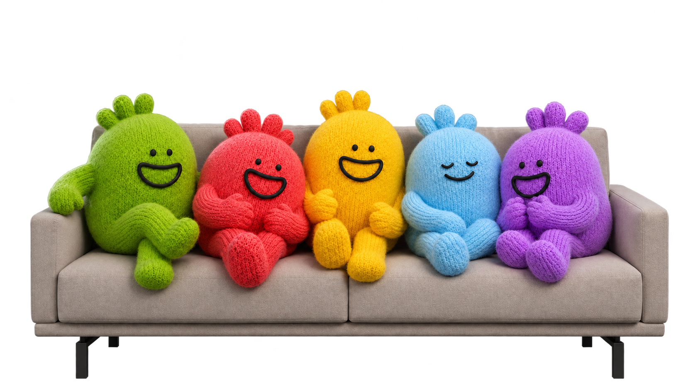
Whether you play at a desk, on a handheld or from the sofa, Playhub helps bring the experience together around your games.
Gaming Mode
Choose Gaming Mode to open Steam Big Picture with your library in reach of the controller. Switch Mode brings you back to the desktop whenever you need it.
Import Games
Add your games from Xbox, Microsoft Store, Epic and GOG to Steam, then choose artwork that makes them feel part of the collection.
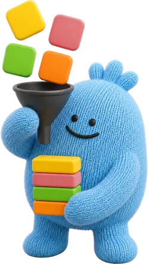
Plugin Store
Playhub sets up Decky and gives you a place to discover and manage plugins from its own collection, the Decky Store and independent projects.
Big Picture Styler
Big Picture Styler gives Steam Big Picture the Playhub look, with coordinated colours, typography and layouts for your game library.
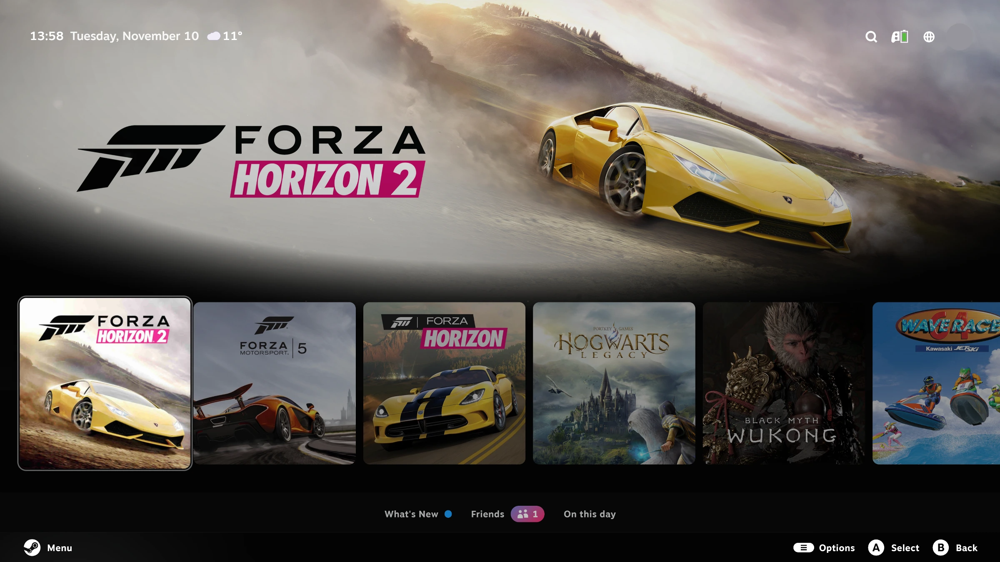

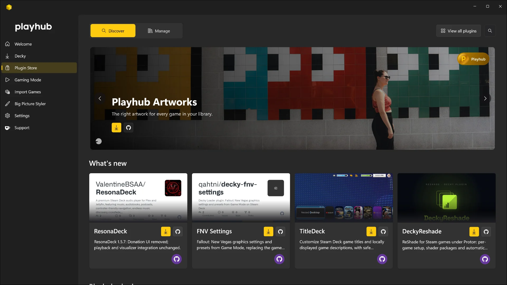

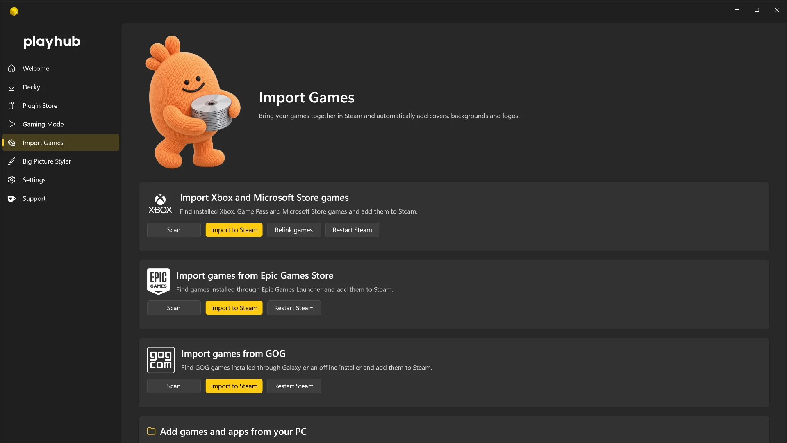

The Playhub plugins each take care of a different part of the experience, from finding a game in your library to listening to music between sessions.
Playhub brings the controls you reach for most into Steam’s Quick Access Menu, so you can change your setup with the controller still in your hands. Adjust sound and display settings, open Decky or browse the Plugin Store from one place.
You can arrange the Quick Access tabs and add shortcuts to the plugins you use most, giving your setup a layout that makes sense to you.
Inside the Playhub plugin
Dashboard keeps your open games and apps within reach. Pick a window from its preview or save an app as a shortcut, then open it from the Apps tab with your controller.
The System tab gives you a clear view of CPU, GPU and memory use, with Switch Mode close by when you want to return to Windows.
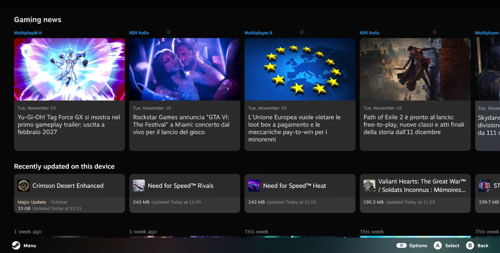
Catch up on gaming while you browse your library. What’s New brings headlines into the home screen, so a quick look through the latest stories fits naturally between sessions.
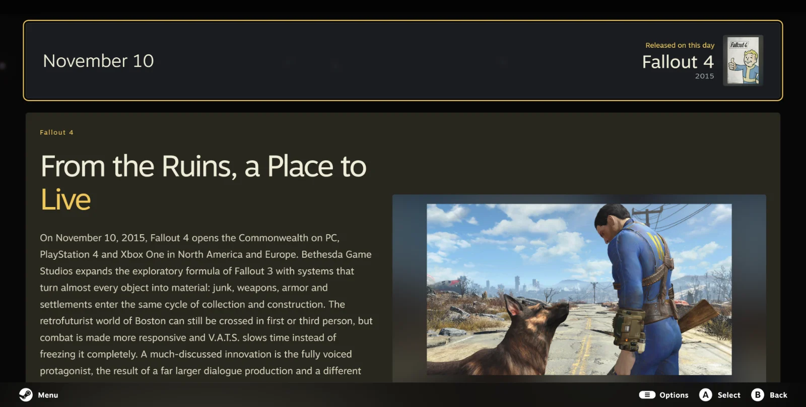
There’s a little piece of gaming history waiting each day. On this day revisits a release, studio or creator connected to that date, with a story to explore before the next game.
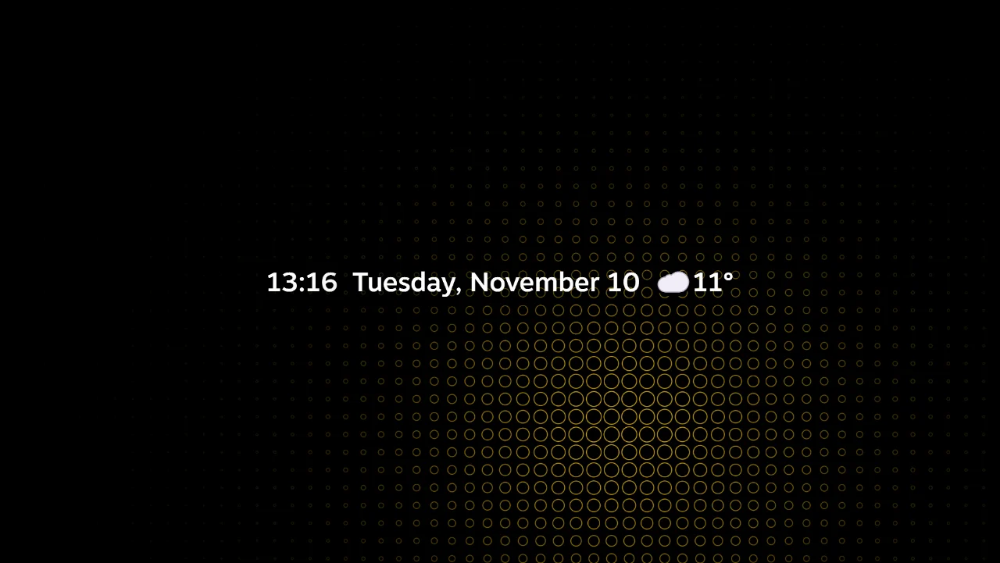
When you step away, Playhub can turn Big Picture into a calm screensaver. Choose an animation such as Circles, with the time, date and weather kept in view.

Give the games you add to Steam a fuller library page. Playhub Metadata brings together descriptions and release details, so you can read about a game before you launch it.
Match the game automatically or choose the right result yourself, then translate its description into your preferred language. Supported games can also show community content, Steam Activity and achievements from RetroAchievements, Xbox through OpenXBL, or local RPCS3 trophies.


Make your library look like a collection you chose. Pick covers, wide banners, backgrounds, logos and icons from one editor, with searches across SteamGridDB, PlayStation, Nintendo, Xbox, IGDB, AlphaCoders, iiDB and IGN.
Perfect Hero and Perfect Banner give you a way to finish the composition yourself. Combine a background and logo, adjust its position, scale, opacity and shadow, then apply the result with your controller.

Get a feel for a game as you open its page. TrailerHero plays a muted trailer in the artwork area, using a Steam video or a match from YouTube to bring the page to life.
Search YouTube and choose the trailer you want to stream directly in the page. You can set the beginning and end for each game, use a local clip, or switch to trailer audio when you want to listen.
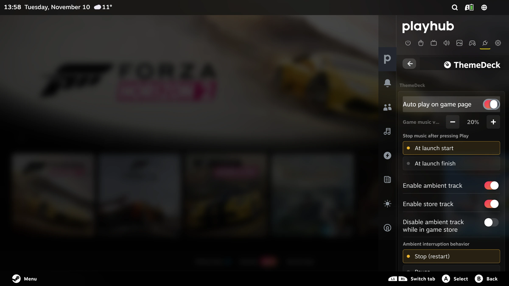
Let a game bring its music with it. ThemeDeck starts a theme when you open that game’s library page, then gives way to the game as you launch it.
Preview tracks from YouTube or your own folders, set where they begin and loop, and adjust the volume to suit the moment. You can also choose separate ambient music for the Steam interface and Store.

Make the start of a game feel like part of your library. Launch Curtain uses its artwork for a full-screen transition while the game opens, giving the desktop and launcher windows a quieter handover.
Choose a background and logo, then look for a short soundbite to accompany the transition. Adjust its timing and volume, preview the result and keep a different composition for each game.
Keep your music close while you play. Now Playing puts Spotify, YouTube Music and local tracks in Quick Access, with playback and volume controls you can reach from your controller.
Open the full-screen player to browse albums, playlists or an artist’s page. Visualizers give the music room to move, while compatible Windows media players can be controlled from the same panel.
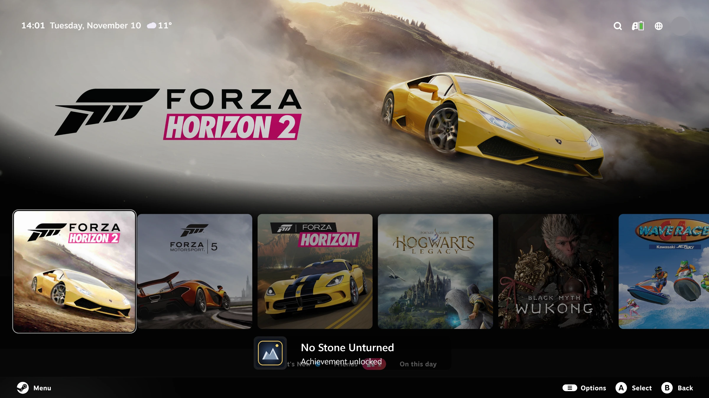

Choose how Steam lets you know a friend is online or an invitation arrives. Playhub Notifications brings together layouts, sounds and animations you can preview before applying.
Choose which notifications you see and how loudly they play. Your selection can also style the Gaming Mode volume indicator, keeping the on-screen details consistent.

Hear where every sound should come from. Playhub Surround gives you a speaker map for stereo, 5.1 and 7.1 setups, so you can check each channel from your controller before starting a game.
Test one speaker or run the full sequence, choosing the signal and volume as you go. The available channels follow your Windows audio device.
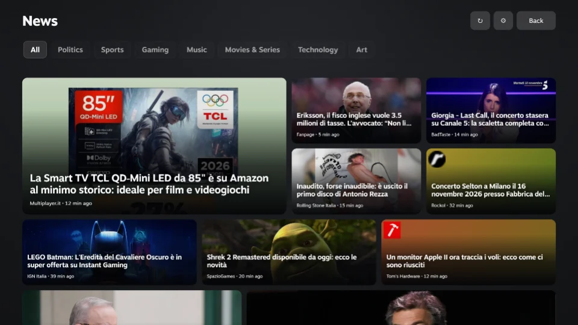
Settle into a few good reads between games. News brings the publishers you follow into Quick Access and a full-screen Newsstand, with tabs for organizing the stories you care about.
Find sources by country, search for a publisher or add an RSS or Atom feed. Open an article in Reader Mode when the source makes its full text available.

A quick glance at the forecast fits right beside your games. Weather shows current conditions, hourly changes and the days ahead in Quick Access, using forecasts from Open-Meteo.
Choose your location and units, then add an icon or temperature beside Steam’s clock when you want the weather to stay in view.

Keep your VPN within reach of the controller. Proton VPN lets you connect, disconnect and choose a country from Quick Access, with the connection status shown in the panel.
It works with the Proton VPN client for Windows after you sign in. Recent locations make it easy to return to a familiar connection.